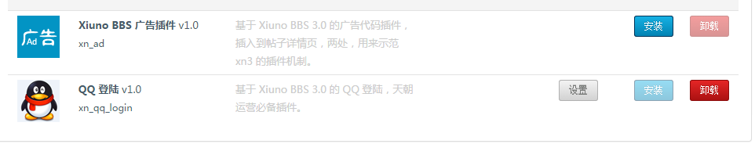

Xiuno BBS 3.0 Hello, Plugin!
在开始前要清楚几点：
1. 一个插件一个目录，存放于 plugin/ 目录下。
2. 插件机制是直接修改代码，类似 linux 下的 diff patch 文件补丁命令，只不过这里一般使用 PHP 编写的类似功能的函数。
3. 为什么不用钩子机制？因为会污染代码，到处都需要埋钩子，会让代码变的很脏。
Xiuno BBS 3.0 自带一个示例插件，我们就把这个示例插件作为 Hello world 来入门讲解。
这是一个最简单的广告插件，就是在帖子下方和页脚处加入广告代码，广告代码放在 ad_1.htm ad_2.htm 中。
文件列表：
conf.json -- 配置文件 json 格式：【必须】
icon.png -- 图标文件 54 x 54 PNG 格式【必须】
install.php -- 安装文件（独立的 app）【必须】
unstall.php -- 卸载文件（独立的 app）【必须】
ad_1.htm -- 插件文件 1
ad_2.htm -- 插件文件 2
文件 conf.json 是插件的配置信息，bbs_version 是适配的最低标准的论坛版本，installed 是否已经安装。
{
"name" : "Xiuno BBS 广告插件",
"brief" : "基于 Xiuno BBS 3.0 的广告代码插件，插入到帖子详情页，两处，用来示范 xn3 的插件机制。",
"version" : "1.0",
"bbs_version" : "3.0",
"installed" : 0
}
【文件 install.php】 安装程序，它是一个独立的 APP，可以直接被 URL 请求，一般从后台插件管理那里通过 AJAX 请求。
<?php
/*
Xiuno BBS 3.0 插件实例
广告插件安装程序
*/
define('DEBUG', 1); // 发布的时候改为 0
define('APP_NAME', 'bbs'); // 应用的名称
define('APP_PATH', '../../'); // 应用的路径
chdir(APP_PATH);
$conf = include './conf/conf.php';
include './xiunophp/xiunophp.php';
include './model.inc.php';
$pconf = xn_json_decode(file_get_contents('./plugin/xn_ad/conf.json'));
$pconf['installed'] == 1 AND message(-1, '插件已经安装，请不要重复安装。');
$user = user_token_get('', 'bbs');
$user['gid'] != 1 AND message(-1, jump('需要管理员权限才能完成安装。', 'user-login.htm'));
//---------------> 第一处插入，按照关键词插入
plugin_install_before('./pc/view/thread.htm', '<?php echo $first[\'message\']; ?>', file_get_contents('./plugin/xn_ad/ad_1.htm'));
//---------------> 第二处插入，按照偏移量插入。
plugin_install_unshift('./pc/view/footer_debug.inc.htm', file_get_contents('./plugin/xn_ad/ad_2.htm'));
json_conf_set('installed', 1, './plugin/xn_ad/conf.json');
message(0, '安装完成！');
?>
【文件 unstall.php】 卸载程序，类似于 install.php
【文件 setting.php】 是可选的，可以参考 plugin/xn_qq_login/setting.php
这下从后台就可以安装，卸载了。
